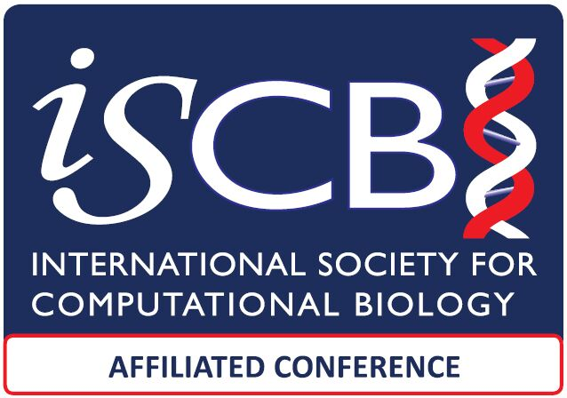
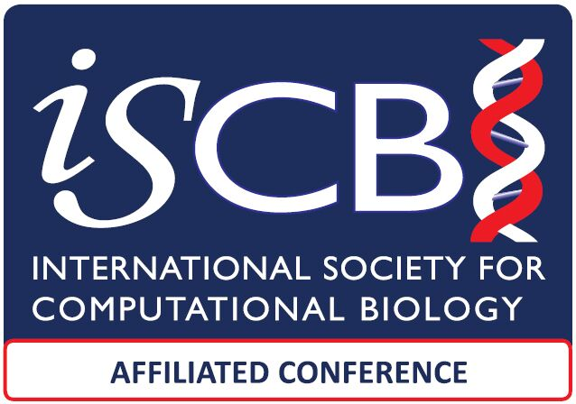

Registration and Venue
Each accepted paper should have at least one registered participant. Without a dedicated registration, the paper cannot be included in the Journals and Springer Proceedings.
Registration and paymentISBRA 2023 Registration Instructions
- ISBRA2023 offers only Online Payment (TBA)
- Registration fees are set differently for onsite participation and remote participation.
- NO refund is available.
Notice: All ISCB members receive a 15% discount on registration pricing!
We strongly encourage ISBRA participants to join the leading professional international society for computational biology and bioinformatics (ISCB) to enjoy its benefits and receive a 15% discount on ISBRA registration.
You can apply for ISCB membership hereOnsite Participation
Author Registration ( Before August 27, 2023 )
600,00 USD
Attendee Registration ( Before August 27, 2023 )
600,00 USD
Author Registration ( After August 27, 2023)
700,00 USD
Attendee Registration ( After August 27, 2023)
700,00 USD
Remote Participation
Remote Author Registration ( Before August 27, 2023 )
500,00 USD
Remote Attendee Registration ( Before August 27, 2023 )
300,00 USD
Remote Author Registration ( After August 27, 2023 )
600,00 USD
Remote Attendee Registration ( After August 27, 2023 )
600,00 USD
 
